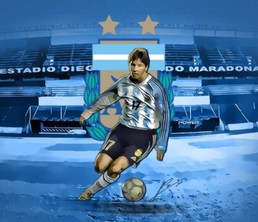

El día 20 de octubre de 1976, Diego Armando Maradona debutó a los 15 años de edad con la camiseta de nuestro querido club en el estadio que ahora lleva su nombre.
También el destino quiso que en este mismo escenario, muchos años despues, el día 29 de junio de 2014, Lionel Messi jugara por primera vez con la camiseta de la selección Argentina, y convertiera sus primeros goles con la albiceleste.
En el año 1913, Argentinos Juniors tenía su estadio en el barrio de Villa Ortúzar, entre las calles Fraga y Estomba. Entre 1925 y 1937 contó con un estadio para 10.000 espectadores en un terreno que pertenecía al Ferrocarril del Pacífico en la intersección de la avenida San Martín y la calle Punta Arenas, ya en el barrio de La Paternal.
Argentinos Juniors fue desalojado por alquileres impagos y el Ferrocarril del Pacífico desmanteló el estadio y embargó sus estructuras de hierro y tablones.
En 1939 se alquiló el predio de Médanos (actual Juan Agustín García) y Boyacá (a 600 m de la cancha anterior), donde actualmente es local, y se llegó a un acuerdo con el Ferrocarril del Pacífico para rescatar el material embargado y comenzar la construcción de un estadio.
El estadio había dejado de utilizarse para partidos de primera división en 1981, cuando se esperaba financiar la remodelación con el dinero producto de la venta de Diego Maradona en principio a Boca -dinero que acabaría invirtiéndose en la contratación de refuerzos de jerarquía para el plantel profesional y en la construcción y mejora de las instalaciones del Polideportivo del club-. Sin embargo Boca Juniors no pagó lo que Argentinos Juniors quería y entonces Diego debe volver al club, que ahora si lo vende al Barcelona de España. Además, por orden del entonces director técnico Ángel Labruna, en 1983 el Bicho mudó su localía al cercano estadio de Ferro.
A finales de 2003 las obras concluyeron, luego de varias detenciones exclusivamente por razones económicas, ya que el estadio fue construido por dinero genuino ingresado al club y no por empresas o donaciones, como quisieron indicar algunas versiones, reinaugurándose con una gran fiesta el 26 de diciembre de aquel año, con 30.000 personas en las tribunas.